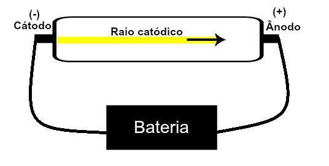

Experimento:
Quando um gás rarefeito, em baixa pressão, é submetido a uma alta tensão elétrica,
produz um feixe de luz (composto por cargas elétricas) que parte do polo negativo
em direção ao polo positivo.
Com esse experimento, Thomson chegou à conclusão de que, quando os átomos do material
gasoso no interior do tubo eram submetidos a uma alta tensão, seus elétrons eram
arrancados e direcionados até a placa positiva.
De acordo com Thomson:
- O átomo era divisivel;
- Tinha carga final nula;
- Apresenta életrons e prótons;
- Comparado a um pudim/panetone de passas;